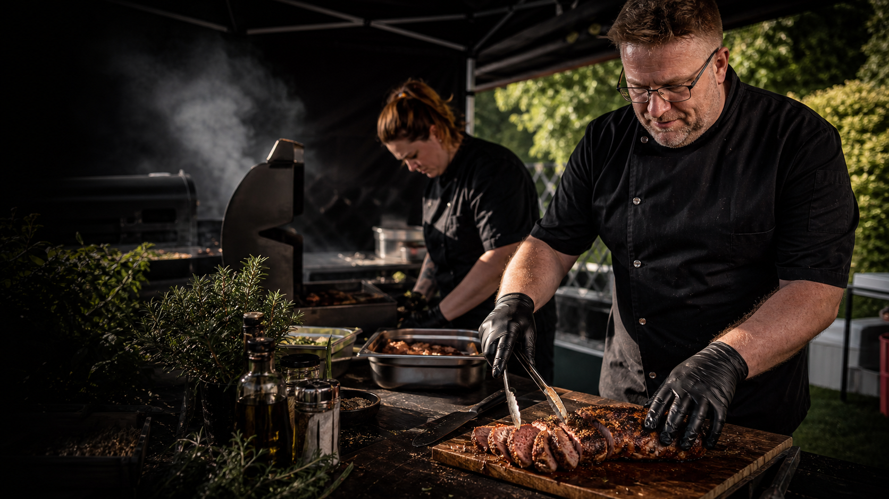
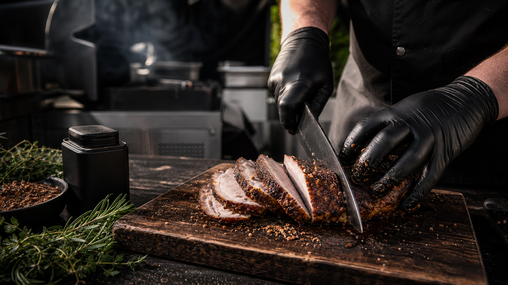
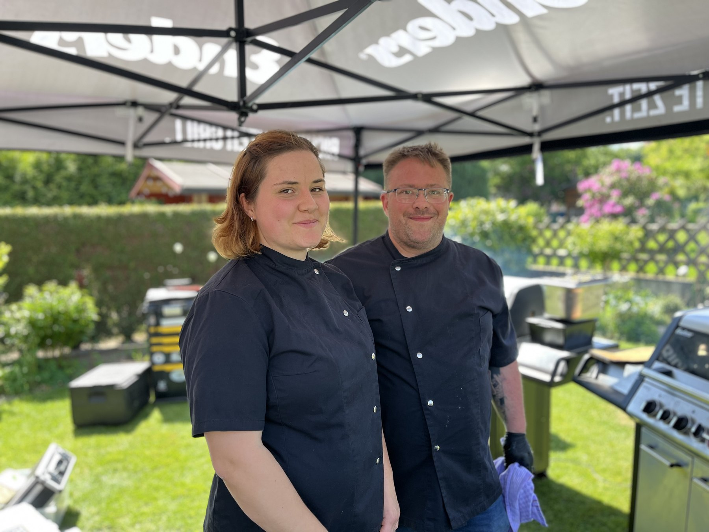
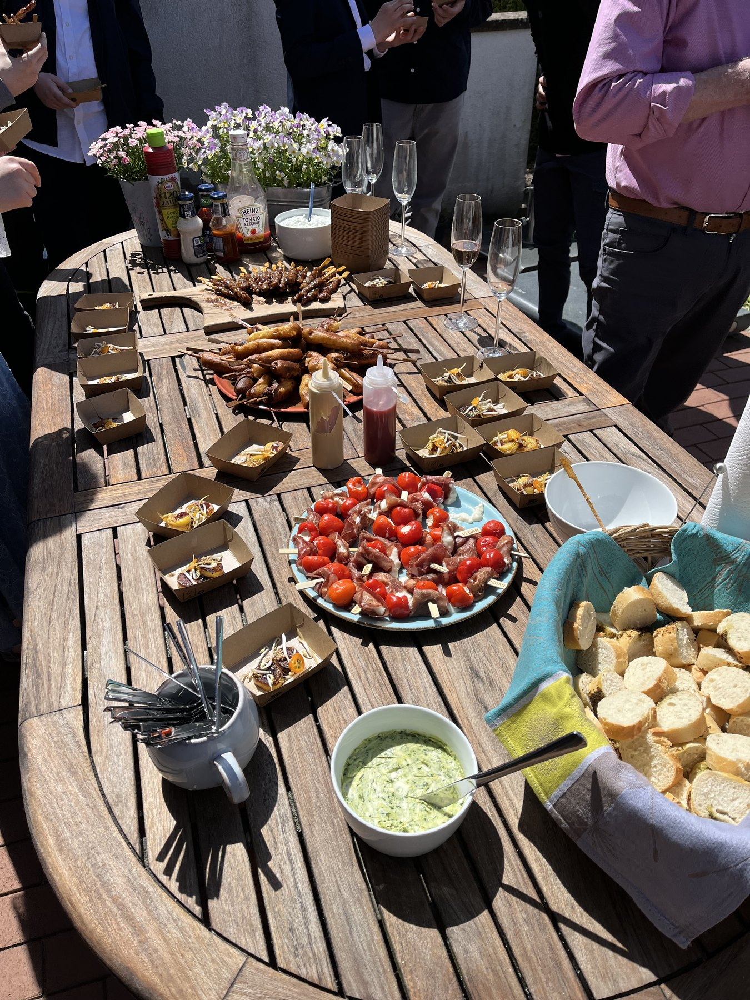
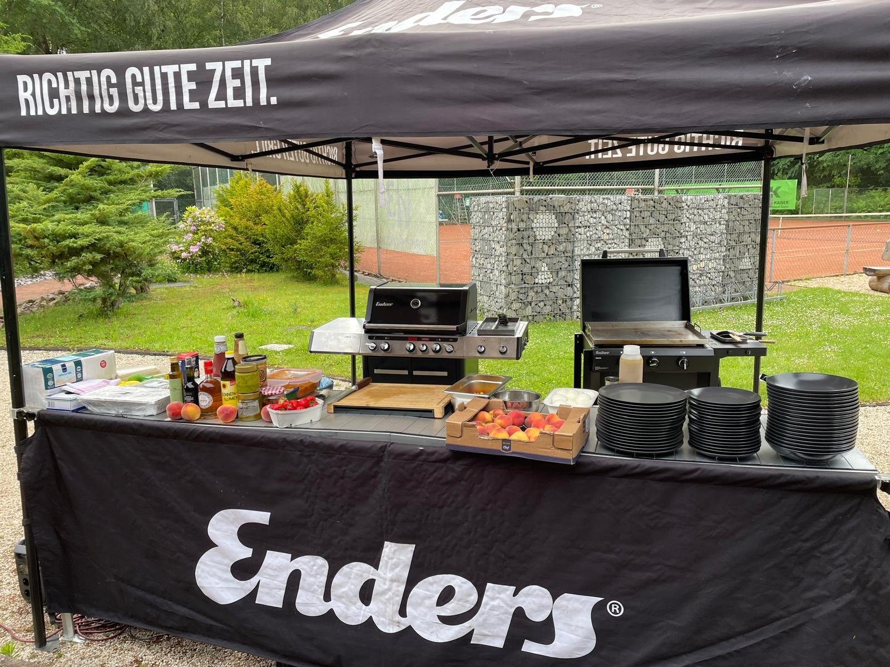
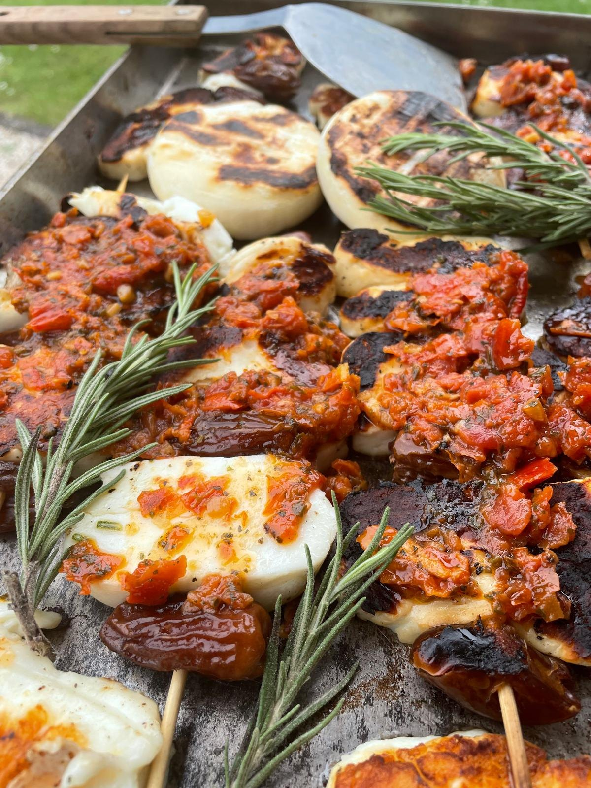
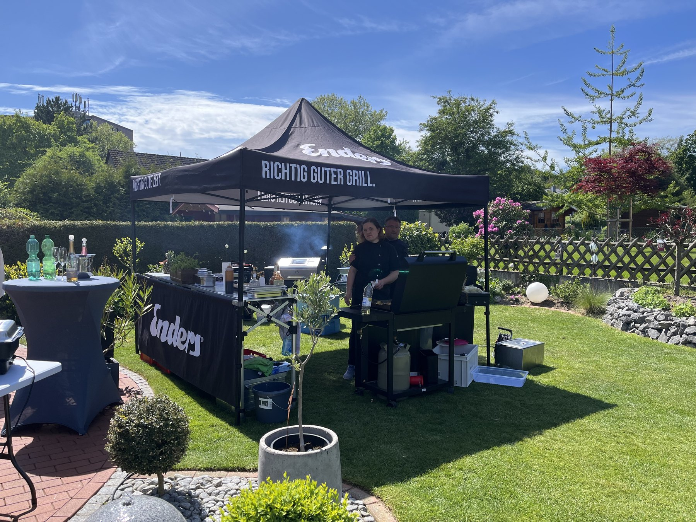
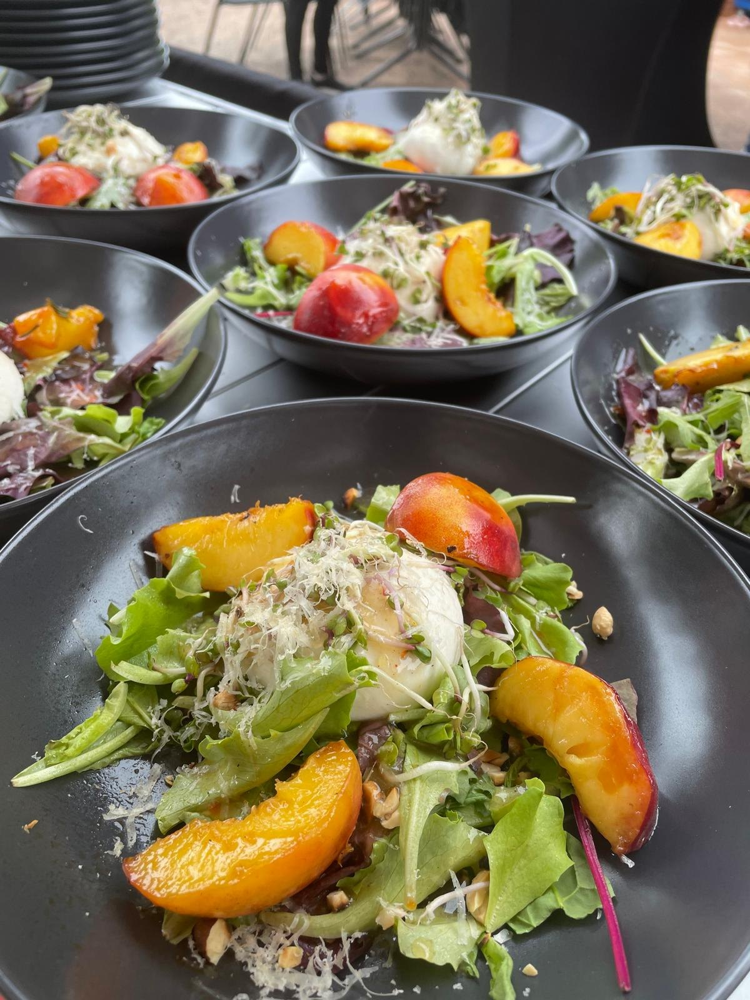
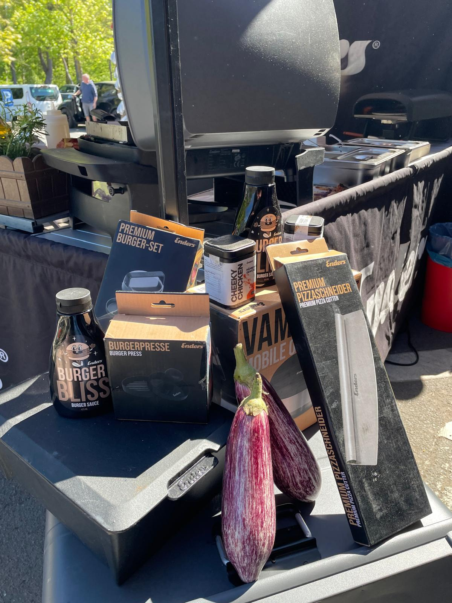

Schwarze Handschuhe, ruhige Handgriffe, Hitze und Timing zeigen, dass hier sorgfaeltig gearbeitet wird.

Handwerk am Feuer. Fuer Grillevents mit Feuerkraut.
Wir bringen echte Grillpraxis auf deine Veranstaltung und in die Dose: als Crew am Feuer oder als Feuerkraut-Gewuerz fuer zuhause.
- Handwerk am Feuer
- Manufaktur-Sorgfalt
- Private Feiern
- Firmenevents
- Feuerkraut dabei
Was brauchst du am Feuer?
01
Ein Grillfest, das sitzt
Private Feiern, Firmenabende, Sommerfeste und volle Tische mit einer Crew, die plant und grillt.
02 Aufmerksamkeit am GrillMarken, Haendler, Messen und Aktionen, bei denen Menschen stehen bleiben und etwas probieren sollen.
03 Gewuerze aus der GlutFeuerkraut bringt die Grillpraxis der Crew als klare Gewuerzmischung nach Hause.
Warum BBQ Brew Crew mehr ist als Feuer und Stimmung
Sorgfalt, die man sieht.
Echte Menschen am Grillstand beweisen die Erfahrung besser als jede Stock-Szene.
Die Gewuerzlinie ist bei Events sichtbar und geschmacklich beteiligt, ohne jedes Gericht festzulegen.
Was unter Eventbedingungen funktioniert, kann zur Feuerkraut-Mischung werden.


Feuerkraut kaufen
Gewuerze aus der Grillpraxis von BBQ Brew Crew.
Erst Anwendung, dann Aroma. Feuerkraut bringt die Erfahrung der Crew in klare Mischungen fuer Rost, Stahl, Pizzaofen, Gemuese, Fleisch und Sauce.
Empfohlener Einstieg
Feuerkraut kaufen
5er Starter-Flight
Feuerprobe, Harzglut, Haehnchenheld, Gartenrauch und Burgerbliss decken die wichtigsten ersten Grillmomente ab: Allround, Kraut, Gefluegel, Gemuese und Burger.

fuer den ersten Rost
Feuerprobe
Allround-Rub mit Paprika, Rauchsalz und Chili fuer alles, was zuerst auf den Rost kommt.
passt zu: Gasgrill, Plancha, Gemuese, Gefluegel
fuer Wald und Feuer
Harzglut
Wacholder, Thymian und Pfeffer fuer Wild, Pilze, Kartoffeln und dunkle Saucen.
passt zu: Wild, Pilze, Kartoffeln, Braten
fuer Stahl und Hitze
Plancha Pfeffer
Grobe Pfefferwaerme fuer Pilze, Zwiebeln, Steaks und alles, was auf Stahl brutzelt.
passt zu: Plancha, Steak, Pilze, Zwiebeln
fuer Pizzaofen
Pizzaofen Rot
Tomate, Oregano, Knoblauch und milde Chili fuer Pizza, Brot, Dip und Ofengemuese.
passt zu: Pizza, Brot, Dip, Tomate
fuer Ribs
Rippenruhe
Mahagoniroter Low-and-Slow-Rub mit Tiefe, ohne Fleisch in Zucker zu ertraenken.
passt zu: Ribs, Pulled Pork, Smoker, Glaze
fuer Burger
Burgerbliss
Senfsaat, Zwiebel, Pfeffer und Rauch fuer Patties, Smashburger, Sauce und Fries.
passt zu: Burger, Fries, Sauce, Smash
fuer Gefluegel
Haehnchenheld
Goldene Paprika, Zitrone, Knoblauch und Kraeuter fuer saftiges Gefluegel.
passt zu: Haehnchen, Wings, Spiesse, Bowl
fuer Gemuese
Gartenrauch
Rauch, Kraeuter und Chili fuer Aubergine, Zucchini, Pilze und Grillkaese.
passt zu: Gemuese, Grillkaese, vegan, Pfanne
fuer Steak-Finish
Steakstille
Reduzierter Finisher mit Salz, Pfeffer, Kaffee und Kraeuterrauch.
passt zu: Steak, Butter, Feuerplatte, Finish
fuer helle Kante
Kraeuterkante
Gruene Harz-Signatur fuer Quark, Salat, Kartoffeln, Fisch und helle Marinaden.
passt zu: Fisch, Quark, Kartoffeln, MarinadeGrillevent anfragen
Die Crew fuer deine Glut.
BBQ Brew Crew plant und grillt fuer private Feiern und Firmen. Feuerkraut ist dabei sichtbar und geschmacklich beteiligt, ohne den Abend zum Verkaufsstand zu machen.
Geburtstage, Gartenpartys, Familie, Freunde
Private Runde
Entspanntes Grillevent fuer Gastgeber, die nicht den ganzen Abend am Rost stehen wollen.
- Anfragen
- Planen
- Grillen
Firmenfeiern, Teamabende, Kundenevents, Sommerfeste
Business Glut
Geplantes BBQ-Catering fuer Firmen, das verlaesslich wirkt und trotzdem nach Feuer schmeckt.
- Anfragen
- Planen
- Grillen
Echte Eindruecke
So sieht BBQ Brew Crew vor Ort aus.
Keine Stock-Kulisse, sondern Setup, Crew, volle Tische und Handgriffe vom echten Grillevent. Genau diese Praxis steckt auch in Feuerkraut.






Promotion am Grill
Wenn Menschen stehen bleiben sollen.
Fuer Marken, Haendler, Messen und Aktionen bringt BBQ Brew Crew Grillpraxis, Standpraesenz und Erklaerstaerke zusammen.
Die Crew grillt, erklaert und schafft einen Punkt, an dem Menschen probieren und ins Gespraech kommen.
Promotion heisst hier nicht Online-Werbung, sondern echte Praesenz mit Hitze, Handgriff und Geschmack.
Geeignet fuer Haendleraktionen, Markenauftritte, Messen, Maerkte und Produkteinfuehrungen.


Erfahrung wird Produkt
Vom Grillstand in die Dose.
Feuerkraut ist die wiederholbare Spur der BBQ-Brew-Crew-Grillpraxis: Was am Stand funktioniert, kann zuhause wieder auf den Rost.
- Feuerkraut ist bei Events sichtbar und geschmacklich beteiligt.
- Dosen am Setup oder QR-Hinweise machen Nachkauf moeglich, ohne laut zu verkaufen.
- Kraeuterpark Altenau bleibt ein dezenter Herkunfts- und Qualitaetshinweis im Feuerkraut-Kontext.
Bereit fuer die naechste Glut?
Frag dein Grillevent an oder hol dir Feuerkraut fuer zuhause. Fuer Promotion am Grill schreib uns mit Anlass, Ort und Zeitraum.